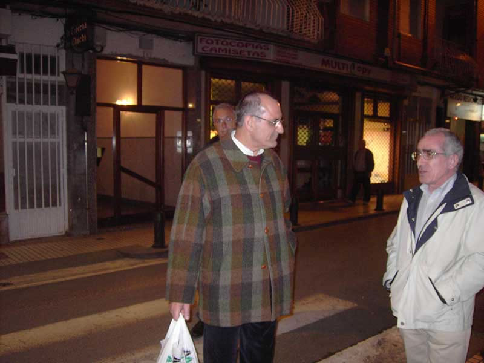

Encuentro en Santoña |
|
 Jartos (que dicen en mi tierra) de vinos y anchoas con Cabrales, otros tomaron cervezas, nos dispusimos a buscar un lugar donde cenar alguna cosilla. Observar a Joaquín que ha cambiado de mano la bolsa del Corte Inglés, ¿por qué lo habrá hecho? hummmm... |